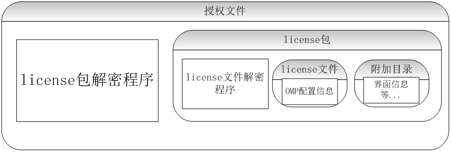
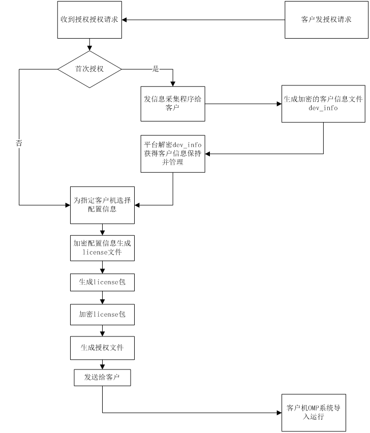
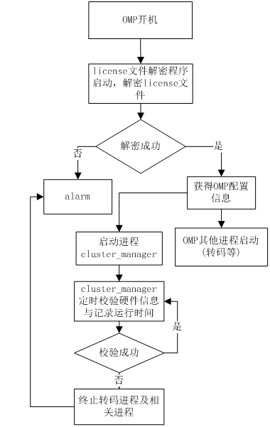
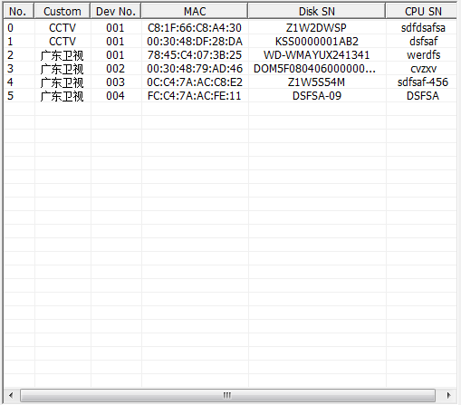

OMP-License设计文档
Table of Contents
1 总述
OMP-License系统是:客户信息采集管理，客户授权文件制作及发布，客户授权管理及监控的综合系统。其核心功能是为客户机制作授权文件。其安全性将是系统的关键所在。同时，作为一个授权文件的管理平台，客户信息的管理。也是本系统需要完成的功能。
2 系统划分
系统划分成以下几块:客户信息采集程序,授权文件制作及客户信息管理平台,license文件解密程序,license包解密程序。
3 授权文件结构图

4 授权过程流程图

5 license文件运行流程图

6 客户信息采集程序
6.1 用途 & 功能
从客户机上获取硬件信息，加密后保存到文件dev_info当中，发还给伟乐。
6.4 加解密方式说明
采用AES-256-CTR对称加密,密钥1写死在该程序当中。同时授权文件制作及客户信息管理平台的解密模块也会写死该密钥1。这样密钥1就作为一种约定写死在加解密两端，而不会出现任何明文的密钥1信息。
客户硬件信息需要加密保存在文件dev_info当中的原因在于：之后的授权文件需要用该信息来制作。因此需要对客户进行保密，不能让其知道授权文件与客户机硬件绑定的具体细节(客户不知道到底与哪个硬件信息绑定)。具体用途会在之后的模块当中介绍。
6.4.1 密钥1
1234567890abcde
7 授权文件制作及客户信息管理平台
7.1 功能
收集管理客户信息，制作授权文件
7.4 客户信息表

7.5 license文件
7.5.2 描述
7.5.3 生成过程
7.5.4 license文件加解密
- 加密方式：AES-256-CTR对称加密及数字签名的两次加密方式。
- 密钥2：见下节
- 解密方式：利用license文件解密程序(下文详述)来解密license文件。
7.5.5 密钥2
7.5.7 OMP配置信息
见下表
| Item | Option |
|---|---|
| PRODUCT_NAME/产品名称 | e.g. CES3000T |
| PRODUCT_LONG_NAME/产品系列 | e.g. OMP500 |
| FEAT_CMMB | enable/disable |
| FEAT_CMMB_CA | enable/disable |
| FEAT_MPEG2/MPEG2编解码 | enable/disable |
| FEAT_H264/H264编解码 | enable/disable |
| FEAT_AVS_DECODE/AVS解码 | enable/disable |
| FEAT_AVS_ENCODE/AVS编码 | enable/disable |
| FEAT_DRA/DRA音频 | enable/disable |
| FEAT_HDTV/高清电视 | enable/disable |
| FEAT_SCH_OL/常规字幕叠加 | enable/disable |
| FEAT_SCH_AD/常规插播 | enable/disable |
| FEAT_FP_AD | enable/disable |
| FEAT_FP_12M | enable/disable |
| FEAT_FP_RPT | enable/disable |
| FEAT_FP_OL | enable/disable |
| FEAT_OUTPUT2/转码后多通道输出 | enable/disable |
| FEAT_PROXY/多格式转换 | enable/disable |
| FEAT_SDI_MULTIPLE_AUDIO/SDI多路音频 | enable/disable |
| FEAT_OFFLINE_ENCODE/离线编码 | enable/disable |
| FEAT_OFFLINE_FTP/本地FTP(OMP600) | enable/disable |
| FEAT_AUDIO1TO2 | enable/disable |
| FEAT_DL_REBOOT | enable/disable |
| FEAT_MULTIPLE_ETHERNET/网口绑定 | enable/disable |
| FEAT_ONEWAVE | enable/disable |
| FEAT_CPU_USED/CPU使用率监控（界面显示） | enable/disable |
| FEAT_AUDIO_ENCODE/纯音频编码 | enable/disable |
| FEAT_YMC | enable/disable |
| FEAT_WMV9 | enable/disable |
| FEAT_TEMPLATE | enable/disable |
| FEAT_MULTIPLE_USER/多用户 | enable/disable |
| FEAT_UDP_ROUTER/环出卡 | enable/disable |
| FEAT_OFFLINE_YUC/CS集群 | enable/disable |
| FEAT_LOG_DISK | enable/disable |
| FEAT_ICLUSTER/CS集群 | enable/disable |
| FEAT_INGEST_BACKUP_MODE/载入备份模式 | enable/disable |
| FEAT_VIDEO_QUALITY_MODE/视频质量模式 | enable/disable |
| FEAT_MULTIPLE_AUDIO_TRACK/多音轨 | enable/disable |
| FEAT_MULTIPLE_SUBTITLE/多字幕 | enable/disable |
| FEAT_LATENCY/延迟 | e.g. 4 |
| FEAT_ADMGT_SERVER | enable/disable |
| FEAT_UPLOAD_ADPL | enable/disable |
| SYS_CHANNEL_NUMBER/IPTV模式通道数 | e.g. 0 |
| SYS_MCHANNEL_NUMBER/DVB模式通道数 | e.g. 0 |
| SYS_INGEST_NUMBER/输入通道数 | e.g. 0 |
| SYS_NODE_NUMBER | e.g. 0 |
| SYS_SCHOL_NUMBER/字幕叠加通道数 | e.g. 0 |
| SYS_FPOL_NUMBER | e.g. 0 |
| SYS_AD_NUMBER | e.g. 0 |
| SYS_SCHAD_NUMBER/常规叠加通道数 | e.g. 0 |
| SYS_FPAD_NUMBER | e.g. 0 |
| SYS_FP12MAD_NUMBER | e.g. 0 |
| SYS_MANUALAD_NUMBER/手动插播通道数 | e.g. 0 |
| SYS_PROXY_SD_NUMBER/标清通道数 | e.g. 0 |
| SYS_PROXY_LD_NUMBER/低清通道数 | e.g. 0 |
| SYS_PROXY_HD_NUMBER/高清通道数 | e.g. 0 |
| CARD_INPUT_TYPE/采集卡输入类型 | e.g. 0 |
| CARD_OUTPUT_TYPE/采集卡输出类型 | e.g. 0 |
| CARD_INPUT_COUNT/采集卡输入数量 | e.g. 0 |
| CARD_OUTPUT_COUNT/采集卡输入数量 | e.g. 0 |
| SYS_INGEST_BACKUP_NUMBER/输入备份通道数 | e.g. 0 |
7.6 license包
7.6.1 功能
在第一次为客户机做授权时，将license文件与license文件解密程序拷贝到OMP系统上。并启动运行license文件解密程序来解密license文件
7.6.2 组成
license包由license文件与license文件解密程序打包后，利用密钥3加密所得。
7.6.3 license包加解密
- 加密方式：AES-256-CTR对称加密。
- 密钥3：见下节
- 解密方式：利用license包解密程序(下文详述)来解密license包。
7.6.4 密钥3
- 密钥采用：客户机硬件信息 + 随机数 组合。即DISKSN+MAC+CPU+随机数。
- 随机数：由平台调用随机数生成函数产生。同时平台会将随机数 编译 到license包解密程序当中。
- 设计思路：见场景一。
7.7 授权文件
- 授权文件由license包与license包解密程序打包而成。
- 当客户需要授权时，发该授权文件给客户
8 license文件解密程序
8.3 解密过程及密钥
10 破坏场景及分析
11 加密方式技术细节阐述
11.1 AES-256-CTR
OMP-License加密采用对称加密形式，对密钥的保护就显得尤为重要。
要做到密钥保护与加密解密效率就要选取适当的加密方式。 决定采用AES-256-CFB模式，密钥以硬件信息的明文组合经过MD5转换后字节序。
原理：明文分组，通过AES算法进行加密，密钥长度256位。采用CTR模式分组加密，如图所示，每一组明文都 对应一个逐次累加的计数器，并通过对计数器进行加密来生成密钥流，也就是说，最终的密文分组是通过将计数器 加密的到比特序列与明文分组进行XOR得到的。这样就可以在先得到密钥流后，进行明文分组的并行加密。从而提高 加解密的速度。这样就适合对OMP-License授权包进行加密。
从图中也可以看出，当一组分组密文解密失败后不影响其他分组的解密过程。从而保证解密过程的流畅性。

11.2 数字签名
11.3 RSA
采用RSA非对称加密算法，生成一对密钥对。用私钥加密，公钥解密来实现数字签名的加解密方式。
12 软件加壳
12.1 目的
防止黑客利用反编译的手段，破解软件解密的接口函数库。
12.2 加壳方式
利用upx加壳工具，进行软件加壳。
13 硬件校验
13.1 作用
防止用户私自更换硬件，如硬盘等。
14 so库
14.1 接口函数简单设计
struct st_OMP_INI; unsigned char* aes_encrypt(const unsigned char* in, size_t inSize, const unsigned char* key, size_t& outSize); unsigned char* aes_decrypt(const unsigned char* in, size_t inSize, const unsigned char* key, size_t& outSize); unsigned char* rsa_encrypt(const unsigned char* in, size_t inSize, const unsigned char* key, size_t& outSize); unsigned char* rsa_decrypt(const unsigned char* in, size_t inSize, const unsigned char* key, size_t& outSize); int get_OMP_INI_MSG(const unsigned char* item, size_t sz);
so库，还需要详细设计，这里只做了简单说明
15 硬件信息补充说明
由于需要用硬件信息作为密钥，目前只设计了利用硬盘序列号，网卡MAC地址，CPU型号。
可以做扩展加上内存，采集卡，系统版本，内核版本等等信息。